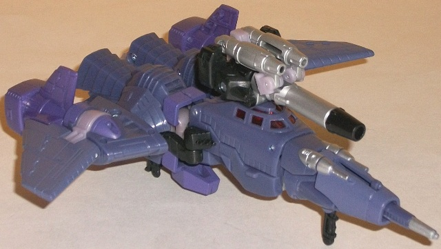
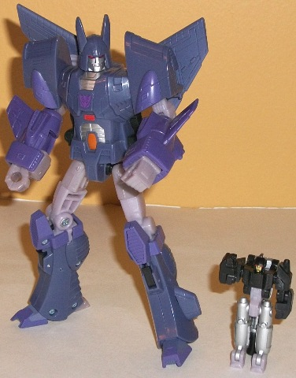

Battle
in Space
Battle
in Space
Set Price
: $20 U.S. (also comes with
a mini pack-in comic)
Overall Rating
: 8.7
(NOTE: Because this set is composed of repaints,
this is not a full-blown review. This mainly covers any changes made to
the set and the color scheme, and merely compares it to the original versions
of these molds. For a review on the original Universe 2.0 Cyclonus w/ Nightstick
mold, go
here
. For a review on the original
Classics Rodimus mold, go
here
.)
Cyclonus
w/ Nightstick


Allegiance
: Decepticon
Size
: Deluxe
Difficulty of Transformation
: Medium
Color Scheme
: Dull pale purple,
purple, and some silver, black, transparent cherry red, light milky grayish
purple, light red, and metallic pumpkin orange
Individual Rating
: 9.3
This time around, Cyclonus
and his little buddy Nightstick have color schemes a bit more slavish to
their G1 cartoon color schemes. Cyclonus is almost entirely purple this
time around, with most of his plastic being either a duller, almost bluish
shade of purple or a more straightforward purple. There's also a bit of
light milky purplish gray to provide some contrast, but it is still just
another shade of purple. Although not clashy or awful-looking by any means,
by itself these main colors could be a bit one-tone. Luckily, Cyclonus
has got some paint apps (particularly in robot mode) that help contrast
against all the purple and add in some color variety, like the silver on
his nosecone, chest, and face; the transparent red on his cockpit and eyes;
and the bits of light red and dull orange on his chest. Because of all
the variety, his chest looks particularly eye-catching in robot mode, but
due to the relative lack of paint apps on his legs and wings, the rear
half of his vehicle mode can look a bit dull. Nightstick has more silver
paint on this version, and combined with the black (as well as the red
face) definitely looks better than his original Universe 2.0 version. Because
this is a "Reveal the Shield" toy, Cyclonus has an allegiance rub symbol
on his chest-- rub it to reveal he's a Decepticon.
No mold changes have
been made to this version of Cyclonus.
Cyclonus Tech Specs
:
Strength: 8.0
Intelligence: 8.0
Speed: 9.0
Endurance: 8.0
Rank: 9.0
Courage: 9.0
Fireblast: 7.0
Skill: 7.0
Rodimus


Allegiance
: Autobot
Size
: Deluxe
Difficulty of Transformation
: Medium
Color Scheme
: Red, dark charcoal
bluish gray, and some silver, light blue, light orange, yellow, dull reddish
brown, chalky lavender, and light pale yellowish orange
Individual Rating
: 8.1
Like Cyclonus, this redeco
of Rodimus is a bit more of a cartoon-accurate redeco of the original toy
in the same
general
colors. The red on this version of Rodimus is
considerably more light than on the previous version, and really pops with
the light blue windows and exhaust, the yellow spoiler, and the orange
chest and parts of the robot mode. The dark bluish gray is a bit of an
odd color to have as a "neutral" color for the wheels, feet, and a few
other minor parts-- a straight black might've worked a little better--
but it still goes okay with the rest. The main difference paint app-wise
between this Rodimus and the original "Classics" version is that the vehicle
animation-accurate flames along the sides have been replaced with a more
robot animation-accurate flame spread on the chest. It looks a little out
of place in vehicle mode, but SPOT ON in robot mode-- with the small caveat
that the yellow used for the flames at the center of the chest are barely
different in tone from the bright orange surrounding them, so you have
to look a little hard to see the deco there. My opinion on this switch
is pretty neutral-- it makes the robot mode look a little better and the
vehicle mode a little less so. All of Rodimus' other paint apps that you'd
expect to see are here-- his tailpipes, engine, and face are silver, he's
got some nice light orange paint apps on some parts in robot mode-- however,
the dull reddish brown paint wash on the waist is confusing to me. It doesn't
outright CLASH with the color scheme by any means, it's just... nonsensical.
Why would Rodimus' pelvis be all rusty and worn while the rest of him has
such a light color scheme? Since he's from the "Reveal the Shield" subline,
there's an allegiance rub symbol on Rodimus' chest, which shows that he's
an Autobot.
No overt mold changes
have been made to this version of Rodimus, BUT the mold has degraded severely
since its first use. Although I have the Japanese version of this release
and mine is fine, I've heard incredibly widespread reports of Rodimus having
very, VERY loose joints on this release to the point where they pop off
really easily, so buyer beware. He also comes with a pretty chrome-y Matrix
accessory, but he can neither hold it nor store it in his chest, and it
can't open, so... neither of the toys in this set can really interact with
it in any way.
Rodimus Tech Specs
:
Strength: 8.0
Intelligence: 9.0
Speed: 9.0
Endurance: 6.0
Rank: 5.0
Courage: 9.0
Fireblast: 8.0
Skill: 7.0
The "Battle in Space"
set is a bit of a mixed bag. Personally I think both of the molds are great-to-excellent,
and their color schemes are a bit superior to their initial releases. Why
the hesitant recommendation, then? It has to do entirely with Rodimus'
extremely loose joints; they really can ruin the figure, from what I've
been told. But if you can't pick up any other versions of these molds for
a decent price-- or value cartoon accuracy above all else-- than this is
a set you'll want to pick up.
"Battle in Space" Bio:
Lost in deep space and desperate to
rendezvous with the other Autobots, Rodimus and his crew pilot their damaged
starship through a forgotten part of the universe. Their one hope is to
avoid the Decepticons they know are hunting them. Cyclonus will stop at
nothing to destroy the Autobots. He will scour the cosmos for his prey,
never stopping and never resting until Rodimus and the others are nothing
but blasted atoms.
Reviews by Beastbot
(NOTE: The pictures above are of the Japanese releases, which have--
as you can see-- allegiance symbols simply painted on instead of the "Reveal
the Shield" allegiance rub symbols in their place. Other than this small
detail, however, the releases are the exact same.)
Back to
Transformers: Autobot Alliance Index